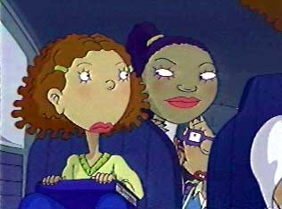
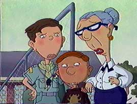
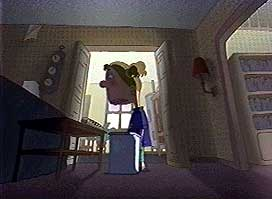
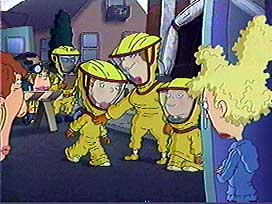
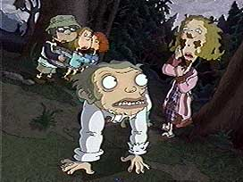

|

|
Episode Twenty Five:
TROUBLE IN GAL PAL LAND
Written by Shelia M. Anthony
Directed by Ron Noble
When Courtney and Miranda get in a fight over which of their volleyball teams Ginger will play for, Miranda decides to replace Courntey with Ginger as her best friend.
Will Ginger have to pick sides between them? Meanwhile, Carl and Hoodsey help Courtney's mom to win an election at her Country Club.
|
|

|
Episode Twenty Six:
SIBLING REVILE-RY
Written by Erin Ehrlich
Directed by Anthony Bell
Ginger wins the student council election on the premise of having big brothers and sisters to guide the younger elementary school trouble makers.
When she assigns George Magrority, a military academy kid, to her brother after he blows up the septic system at his school, will he have a positive influence on Carl, or will he go too far?
|
|

|
Episode Twenty Seven:
LOSING NANA BISHOP
Written by Eryk Casemiro
Directed by Dean Criswell
When Dodie's Nana dies, Ginger and Macie help her out, but Ginger realizes that she never knew her own grandma.
Will her dad give her any insights into what she was like?
Meanwhile, Hoodsey comes to terms with his own grief at Nana's funeral, but how will his family react when they find out that he locked an iron mask around his head?
|
|

|
a name="anchor4">
Episode Twenty Eight:
TGIF
Teleplay by Rafi Simon and Sheila M. Anthony.
Based on an idea by Barbara Schwartz.
Directed by Joseph Scott.
Friday the 13th, Carl's favorite holiday, begins with the Foutley car breaking down, Ginger's sweater getting ripped, and her school paper being blown away.
Then a rare house-eating mold is discovered in Ginger's house that causes it to be condemned.
Will the streak of bad luck continue, and how could it get any worse?
Maybe if Ginger gets fed up with her family...
|
|

|
Episode Twenty Nine:
LUNATIC LAKE
Written by Eryk Casemiro.
Directed by Michael Daedalus Kenny
Ginger, Carl and Macie go on vacation to Loon Lake with Dodie and her family, where an escaped "lunatic" from the insane asylum has been reported to be hiding. Will Carl and Hoodsey get to scare Blake, who is camping in the woods there as well, or will they be in for a scare themselves? Meanwhile, Ginger and Macie deal with Dodie's mom Joanne, who is a bit "high strung".
|
|
|
Episode Thirty:
MS. FOUTLEY'S BOYS
Written by Emily Kapnek.
Directed by Ron Noble
Ginger really wants her mom to start dating, but when she starts seeing Buzz the handyman (from TGIF) and his three boys invade the Foutley house, Ginger might have second thoughts about it.
This episode also introduces Dr. Dave.
|